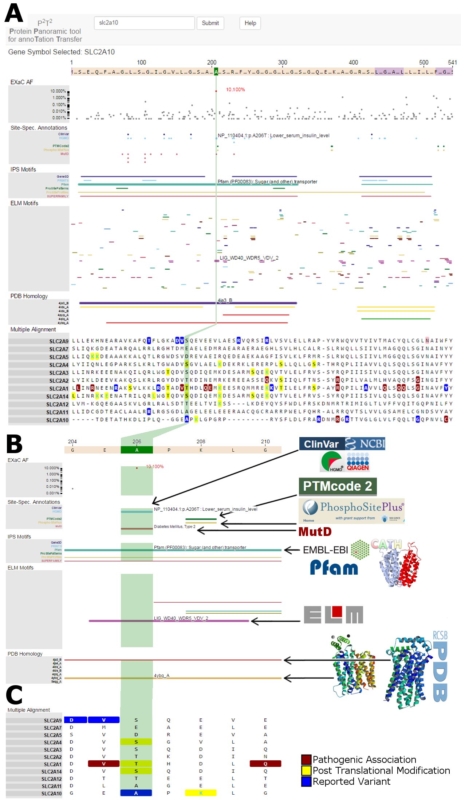

- Very High Homology: Identity ≥ 95% or Positive ≥ 97%
- High Homology: Identity ≥ 70% or Positive ≥ 75%
- Medium Homology: Identity ≥ 40% or Positive ≥ 60%
- Low Homology: Identity ≥ 30%
*For simplicity, we don't show all of the homologous structures in the PDB. To select matches for viewing, we
consider 50 uniformly spaced positions across the protein sequence and identify the hit with the highest
sequence identity nearby that site. If, for example, one PDB matches most of the sequence, we will still return
up to 10 hits.

A) When the user places their cursor over an amino acid, the position is highlighted across
all annotation tracks (vertical green highlight). Here we highlight A206. This is a site with a
phenotype-associated polymorphic allele within a known topologic domain and for which homologous experimental
structures exist. Further, it is a member of family of human sugar transporting proteins, each with their own
set of similar annotations.
B) Zooming in on the region around A206, the specific and detailed data and annotations
available within P2T2 more easily viewed.
C) The MSA shows that the alternate amino acid, T, is common in the family and is a known
phosphorylation site (PTM type shown on mouseover).
Copyright (c) 2016 Mayo Foundation for Medical Education and Research.
Permission is hereby granted, free of charge for non-commercial use, to any person obtaining a copy of this
software and associated documentation files (the "Software"), to deal in the Software, including the rights to
use, copy, modify, merge, publish, or distribute, copies of the Software, and to permit persons to whom the
Software is furnished to do so, subject to the following conditions:
The above copyright notice and this permission notice shall be included in all copies or substantial portions of
the Software.
Any use by a for-profit entity must obtain a commercial license from Mayo Clinic Ventures (see below).
THE SOFTWARE IS PROVIDED "AS IS", WITHOUT WARRANTY OF ANY KIND, EXPRESS OR IMPLIED, INCLUDING BUT NOT LIMITED TO
THE WARRANTIES OF MERCHANTABILITY, FITNESS FOR A PARTICULAR PURPOSE AND NONINFRINGEMENT. IN NO EVENT SHALL THE
AUTHORS OR COPYRIGHT HOLDERS BE LIABLE FOR ANY CLAIM, DAMAGES OR OTHER LIABILITY, WHETHER IN AN ACTION OF
CONTRACT, TORT OR OTHERWISE, ARISING FROM, OUT OF OR IN CONNECTION WITH THE SOFTWARE OR THE USE OR OTHER
DEALINGS IN THE SOFTWARE.
For other licensing arrangements including any commercial use, please contact:
1) Eric W. Klee, Ph.D., Assistant Professor of Medical Informatics, Associate Director of Bioinformatics,
Co-Director, Clinical Genome Sequencing Laboratory, Mayo Clinic, Rochester, MN 55905
2) Mayo Clinic Ventures, Attention: Peter A. Ball, Minnesota BioBusiness Center - 4, 221 1st Ave. SW, Rochester,
MN 55904 ball.peter@mayo.edu